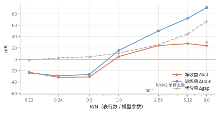
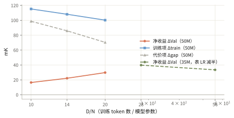
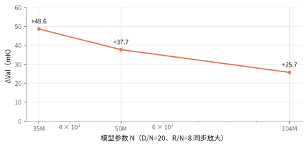
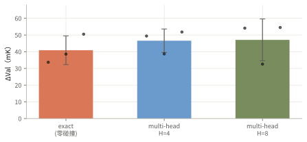

第一批干净读数：表与模型的比值 R/N 决定成败，最优在 ≈5
表太小（R/N≤0.5）时注入反而有害；R/N≥2.5 后净收益进入 +24~30 mK（千分之一 nat）的平台。收益侧是覆盖率（幂律 ∝(R/N)^0.5），代价侧是 forking gap（∝(R/N)^0.85）。数据越多代价越小（∝(D/N)^−0.5）。
- 模型 nanoGPT 35–200M
- 数据 7.1B token 干净池
- 协议 E3：同一批数据训练 3 遍
- 口径 同机同 seed 与 nogram 配对
- 2026-10-22
四条支线并行：机制已结题，scaling 支线出第一批读数
名词：OE 指把 n-gram（n=2~5）查表结果注入模型输入端的结构。gap 指同一模型在同一 step 上验证 loss 减训练 loss，量度 forking 强度。ΔVal 指 OE 臂相对 nogram（无表）基线的验证集收益，正数表示 OE 更好，单位 mK。它恒等于两项之和：Δtrain（OE 把训练 loss 压低多少，收益项）减去 Δgap（OE 的 gap 比基线大多少，代价项）。干净池指剔除所有与验证集共享 32-token 片段之后的训练数据（内部代号 v27）。
R/N 扫描：R/N≤0.5 有害，R/N=1 盈亏平衡，≥2.5 进入平台
固定 50M 模型、D/N=20、训练 3 遍，只改表行数。R/N 是表行数与模型参数之比。净收益 ΔVal 在 R/N≈1 过零，在 ≈5 达到峰值 +27.6 mK。

逐项数字（绿色 = 收益，红色 = 损害）
| R/N | bigram 覆盖率 | Δtrain | Δgap | ΔVal |
|---|---|---|---|---|
| 0.12 | 19% | −24.0 | −1.3 | −22.7 |
| 0.24 | 25% | −29.1 | +2.6 | −31.7 |
| 0.50 | 32% | −26.6 | +4.4 | −31.0 |
| 1.00 | 40% | +15.6 | +10.8 | +4.8 |
| 2.56 | 50% | +50.0 | +25.7 | +24.2 |
| 5.12 | 56% | +72.2 | +44.6 | +27.6 |
| 8.00 | 59% | +90.9 | +67.0 | +23.8 |
覆盖率指训练 token 的 bigram context 落在表内的比例（1.44B 索引语料口径）。两条拟合：Δtrain ∝ (R/N)^0.5，Δgap ∝ (R/N)^0.85。
小表有害的机理：不是碰撞拥挤，是「半覆盖合约」拖垮主干网络
exact 模式零碰撞，表外的 context 注入严格为零，不存在共享行被挤爆。逐位置切分显示：小表的伤害与覆盖无关，均匀分布在所有位置上——变差的是主干网络本身。表以 128 倍学习率快速接管被覆盖的浅层局部条件，主干把整个「局部 n-gram 条件」外包给表。覆盖率只有 20~30% 时，外包合约只在少数位置兑现：其余同类 context 既失去主干的浅层建模、又没有表兜底。覆盖率约 40% 时合约基本兑现，Δtrain 过零转正。
逐位置切分（同一批 14.7 万 token，小表 / 大表 / 无表三臂对齐，train loss 差）
| 位置组 | 6k 行表（R/N=0.12）− 基线 | 400k 行表（R/N=8）− 基线 |
|---|---|---|
| 小表覆盖的位置 | +0.029 | −0.092 |
| 仅大表覆盖的位置 | +0.029 | −0.102 |
| 四阶全未覆盖的位置 | +0.020 | −0.012 |
小表在所有位置上都比基线差，包括它自己覆盖的位置。大表在所有位置上都更好。同一批高频 context 在两臂上符号相反，说明伤害来自两臂整体训练动力学的差异，不来自 context 本身。
D/N 包络：数据越多净收益越大，gap 代价 ∝ (D/N)^−0.5
固定 50M 模型、R/N=8，只改数据量。代价项 Δgap 随数据量按 (D/N)^−0.5 缩小，收益项 Δtrain 只按 (D/N)^−0.2 缓慢衰减，净收益因此随数据量增大。对生产形态这是好消息：训练预算越大，forking 代价越薄。

模型与数据等比放大：gap 不炸，但收益随模型变大变薄
固定 D/N=20、R/N=8，把模型参数量 N、数据、表行数同步放大 3 倍（35M→104M）。gap 代价近似不变（∝N^0.12），净收益从 +48.6 降到 +25.7 mK。放大是安全方向，但每单位代价买到的收益在缩水。

multi-head 三 seed 定案：同表参数下，零碰撞 exact 就是甜点
把一张表拆成 4 或 8 张窄表（multi-head，Engram 式），总参数不变。三个 seed 上 multi-head 均值略高 +6 mK，但差距在 seed 噪声（±7~12 mK）之内。把覆盖扩大 4 倍的变体在每个头数下都恰有一个 seed 发散。结论：这个尺度上多头买不到稳定收益。

支线 3 现状：蒸馏表就绪，学生 8 臂在跑
用 Qwen3.5-4B 在 10B token 上做残差聚类，产出 4 阶共 1000 万行的语义表（2.25M 聚类槽 + 0.25M 哈希兜底每阶），产线重建误差为零。学生模型 240M、Qwen 词表 24.8 万，8 臂矩阵（蒸馏初始化 / 随机初始化 / 冻结 / 可训练 × 两种视图）在 8 张卡上训练中，明晚出 3 遍末的配对读数。这是第一次用语义聚类表测 forking：冻结臂与可训练臂的差直接分离「内容先验」与「训练共适应」的贡献。
在飞队列与收割时间
| 机群 | 内容 | 跑完时间 |
|---|---|---|
| A100 机群 ×38 | R/N、D/N 扫描 127 臂（已完成 32） | 明早 ~08:00 清空 |
| 360-2 机群 ×8 | 104M / 200M 的 D/N 点 12 臂 | 明晚 |
| ophis 机群 ×8 | 104M D/N=56 一对 + multi-head 收尾 | 明早 ~08:00 |
| 蒸馏机 ×8 | 学生波 8 臂 | 第一遍末 02:50，第三遍末明晚 ~18:30 |